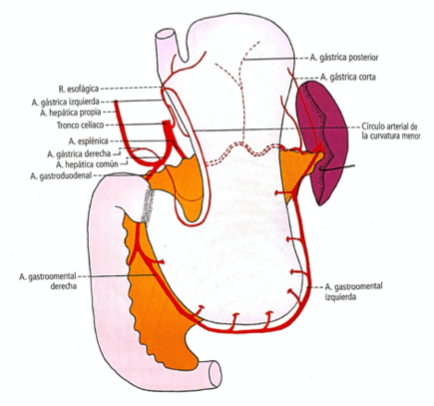
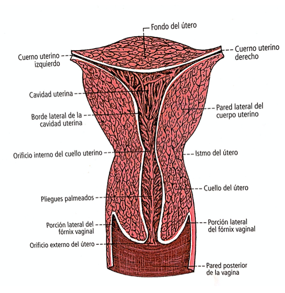

Tórax
Se denomina caja torácica a la formación osteocartilaginosa que contiene los pulmones el corazón y los demás órganos mediastinales. * Está formada en la línea mediana posterior por las 12 vértebras torácicas * en la línea mediana anterior por un hueso único; el esternón * y lateralmente por 12 arcos de cada lado formados por las costillas y los cartílagos costales correspondientes.
El Esternón
Su borde superior es más ancho que su extremo inferior, es convexo hacia anterior. Está constituido por tres segmentos: - superior: que recibe el nombre de manubrio _ medio; el cuerpo _ e inferior: que forma el extremo en punta denominado proceso xifoides.
Costillas
Son huesos planos de forma alargada están unidas al esternón mediante cartílagos costales. Existen doce de cada lado del tórax. (costillas verdaderas, falsas y flotantes)
Articulaciones
- La cabeza de la costilla en la parte lateral de dos cuerpos vertebrales se llama articulación de la cabeza de la costilla.
- El tubérculo de la costilla con el vértice del proceso transverso articulación costo transversa.
Articulación de la cabeza dela costilla
- Cabeza de la costilla(costilla)-fositas costales(vértebras)
- Capsula articular delgada, Ligamento radiado de la cabeza de la costilla, Ligamento posterior, ligamento intraarticular de la cabeza de la costilla.
Articulación costotransversa
Reúne el tubérculo costal con el vértice del proceso transverso de la vértebra subyascente.
- Capsula delgada, Ligamento superior, Ligamento inferior, Ligamento lateral, Ligamento costrotransverso.
Articulaciones esternocostales
sinoviales planas. Une los cartílagos costales con el esternón.
Pequeña capsula, Ligamentos radiados anterior y posterior, Ligamento esternocostal intraaricular.
Múculos intercostales interno y externo. Elevadores de las costillas, subcostales y Transversos del tórax.
Pulmones
Toman forma cuando están llenos de aire, cada uno tiene forma de semicono. Tres caras (costal, mediastínica, diafragmática), un vértice, dos bordes (anterior, inferior), una base o circumferencia. Separados por fisuras interlobares, que ividen los lóbulos pulmonares
Pulmón derecho
Pulmón izquierdo
Cara mediastínica
Hilio pulmonar: depresión situada en la mitad inferior de la cara mediastínica. porción retrohiliar: convexa. porción vertebral, aorta descendente. porción prehiliar: cóncava, apoyada sobre el corazón. porción suprahiliar: vena cava superior, vena ácigos, y la parte terminal del arco aórtico.
Bifurcación traqueal
Está constituida por la terminación de la tranquea y su división bronquial.
Bronquios Principales
Corazón
El corazón está compuesto por dos mitades funcionalmente diferenciadas por lo cual se describen un corazón derecho y un corazón izquierdo. En cada una de estas hay 2 cavidades un atrio y un ventrículo.

El Corazoón
Detrás de la pared externo condrocostal en la parte inferior del mediastino. Se encuentra entre ambos pulmones(rodeados por sus pleuras), por encima del díafragma y delante de la columna vertebral.
Cavidades
Está dividido en derecha e izquierda por un tabique; el septo del corazón y de cada lado poseen dos cavidades; un atrio y un ventrículo, separados por un orificio denominado atrioventricular provisto de una válvula atrioventricular.
- Septo: septo interatrial en su centro se reduce a 1 mm que corresponde a la fosa oval del atrio derecho. El septo interventricular separa los dos ventrículos es convexo hacia la derecha y es muy gruesa. El septo atrioventricular se haya comprendido entre el septo interatrial y el septo interventricular, corresponde la inserción de la valva septal de la válvula atrioventricular derecha [tricúspide] y la válvula anterior de la válvula atrioventricular izquierda [mitral].
- Atrios: Ambos son cavidades de parece delgada escuchar musculatura no aparece en forma de relieve dentro de sus paredes es lisa pero sin gruesa y enriquece a nivel de las aurículas.
- Ventrículos: Son cavidades irregulares, se comunican con el atrio por un orificio denominado orificio atrioventricular mientras que la sangre sale de los ventrículos por un tronco arterial grueso; el tronco pulmonar para el derecho y la arteria aorta para el izquierdo.
- Aparatos valvulares atrioventriculares: Están anexados a los orificios atrioventriculares, son una membrana y cada una está dividida en un determinado número de valvas(cúspides) tres para la válvula derecha, dos para la izquierda.
- Oificios de salida de los ventrículos: El orificio del tronco pulmonar y el orificio de la aorta están provistos de válvulas: válvula pulmonar y válvula aórtica, están formadas por un sistema de tres valvas cada uno denominadas valvas semilunares.
Miocardio
La musculaturas están reunidas por un tejido muscular el sistema de conducción.
- El miocardio de los ventrículos es grueso, sobre todo alrededor del ventrículo izquierdo- tiene fibras comunes y fibras propias. Las fibras superficiales comunes aseguran los movimientos de torsión del corazón, mientras que las fibras profundas se encargan de expulsar la sangre fuera de las cámaras arteriales.
- El miocardio de los atrios es mucho más delgado tiene fibras propias y fibras comunes. Los músculos pectíneos refuerzan las aurículas, fascículo de la cresta terminal, tendón de la válvula de la vena cava inferior, limbo de la fosa oval.
Vascularización
Vasos coronarios.
- Arterias coronarias izquierda: (válvula semilunar izquierda) se origina de la aorta. ramas colaterales: destino vascular, atrial y adiposa. Ramas terminales: inerventricular anterior, rama circumfleja.
- Arteria coronaria derecha: (válvula semilunar derecha y seno aórtico) su origen está en la aorta, ramas colaterales: ramas vasculares, ramas atriales, ramas ventriculares, ramas interventriculares septales. Ramas terminales: coronaria derecha ?.
Inervación
Está asegurada por los dos sistemas simpático y parasimpático del sistema nervioso autónomo. Comprende tres partes: los nervios cardíacos del simpático y del vago, los plexos cardiacos donde estos nervios se reúnen, y los nervios cardíacos originados en estos plexos.
- del simpático: son los nervios cardíacos cervical superior y medio que siguen a las arterias carótidas detrás de la aorta, y el nervio cardiaco cervical inferior más posterior y más corto.
- del vago: también se distinguen nervios cardiaco cervicales superiores e inferiores y nervios cardíacos torácicos pasan delante de la aorta.
- plexos cardíacos: Llegados al arco aórtico los nervios cardíacos el simpático y del vago se comunican ampliamente entre sí, forman un plexo superficial anterior preaórtico y un plexo profundo posterior retroaórtico. Forman el plexo subaórtico.
ramos: 1. Nervios de la raíz arterial: estos se reúnen alrededor de la aorta y el tronco pulmonar. 2. Nervios de la raíz venosa: Proceden de las porciones inferiores del vago y el tronco simpático pasan por detrás de la bifurcación del tronco pulmonar.
Pericardio
Es un saco fibroseroso que envuelve al corazón, a la raíz arterial que parte de él y a las raíces venosas que a él llegan. Pericardio fibroso y seroso.
- Pericardio Fibroso: es un saco en forma de cono o de pirámide hueca, con base inferior y vértice superior, su cara interior está tapizada por la hoja parietal del pericardio seroso tiene una base, cuatro caras y un vértice. Fijación: lig frenopericárdicos, esternopericárdicos, membrana broncopericárdica, vertebropericardeo, tirotimopericardica, aparato adiposo pericárdico. 2.Pericardio Seroso: cómo toda la serosas, el pericardio seroso constituye una envoltura que comprende dos láminas una lámina visceral o epicardio que tapiza íntimamente el corazón y los vasos adyacentes y una lámina parietal que tapiza la cara profunda del pericardio fibroso.
- Cavidad pericárdica: el espacio entre las láminas,
Tronco Pulmonar
Emerge de la parte superior izquierda del ventrículo derecho se dirige hacia atrás a la izquierda se divide bajo el arco aórtico en dos ramas terminales la arteria pulmonar derecha e izquierda, marcada por el espolón pulmonar.
Aorta
Originada en el ventrículo izquierdo, distribuye en todo el organismo la sangre de la circulación mayor. Trayecto: se dirige oblicua hacia adelante, arriba y a la derecha, luego se arquea (arco aórtico) hacia la izquierda y atrás adorsada a la cara izquierda del esófago y la tráquea, desciende delante de las vértebras torácicas, atravesa el diafragma y desciende delante de la columna lumbar, origina las dos _arterias ilíacas comunes__ y la arteria sacra mediana.
- Tronco braquiocefálico: donde nace la arteria carótida común derecha y la arteria subclavia derecha.
- arteria carótida común izquierda
- arteria subclavia izquierda
Carótida
- Aorta torácica: ramas bronquiales (pulmones), esofágicas (esófago), Intercostales posteriores.
- Aorta obdominal: arterias parietales(frenicas, inferiores, lumbares y sacramedia) y viscerales(tronco celíaco, mesentéricas sup e inf., suprarrenales medias, renales y testiculares/ováricas). Terminales: Ilíaca común, Ilíaca externa, Ilíaca interna,
Vena Cava Superior
A esta vena confluyen las venas de la cabeza y del miembro superior drenadas de cada lado por las venas braquiocefálicas.
- Venas de la cabeza y del cuello: vena yugular interna (v carótida), vena yugular externa (v. subclavia), yugular anterior, venas tiroideas inferiores, Vena vertebral (plexo venoso suboccipital), yugular posterior, vena vertebral y vena cervical profunda.
- Venas del miembro superior
- Vena subclavia: Continúa a la vena axilar y alcanza a la vena yugular interna.
- Venas braquiocefálicas: derecha, izquierda.
La vena cava superior lleva al atrio derecho la sangre de la cabeza, del cuello, de los miembros superiores y, por la vena ácigos, la sangre de la pared torácica y de la vía paravertebral.
Las dos venas braquiocefálica se reúnen en el mediastino superior detrás del primer cartílago costal derecho dando origen a la vena Cava superior. La vena pasa delante de la raíz pulmonar derecha penetra en el pericardio y termina en el atrio derecho por un orificio avalvular.
Vena Cava Inferior
Se originaa la altura de L4-L5 y termina en el atrio derecho. Éste sistema confluyen la sangre de los miembros inferiores de la pelvis drenada por las venas ilíacas comunes.
- Venas del miembro inferior:
- Venas de la pelvis: ilíaca interna, ilíaca común,
- Vena cava inferior: Nace de la reunión de las dos venas ilíacas comunes. Desde su origen la vena se dirige hacia arriba siguiendo el lado derecho de la columna vertebral lumbar se dirige hacia arriba y medialmente perfora el pericardio y termina en la cara inferior del atrio derecho.
Las venas de la columna vertebral forman plexos venosos vertebrales internos y externos ampliamente Ana tomo estados entre sí.
Diafragma
Es un músculo plano, ancho y delgado. Forma un tabique entre el tórax y el abdomen.
Inserciones
- Porción Lumbar : Las inserciones de la porción lumbar están representadas por cordones fibrotendinosos sólidos e inextensibles. Los pilares derecho e izquierdo y dos arcos aponeuróticos; los ligamentos arqueados medial y lateral.
- Porción Costal : Las fibras del diafragma se fijan en la cara medial de las últimas seis costillas y de sus cartílagos por digitaciones que contactan por sus bordes. Se distinguen el ligamento arqueado lateral. Estas inserciones se intrincan con las del músculo transverso del abdomen.
- Porción Esternal : Se fijan sobre la cara posterior del proceso xifoies por dos fascículos, a veces separados por un pequeño espacio conjuntivo laxo el hiato mediano de la porción esternal. Se hallan separados de la porción costal por el triángulo esternocostal.
Tiene un centro tendinoso, donde se interponen los músculos digástricos.
Aberturas del diafragma
| Aberturas | Ubicación | Nivel | Contenido |
|---|---|---|---|
| Hiato aóritoco | entre los pilares derecho e izquierdo | T12 | Arteria aórta, conducto torácico |
| Hiato esofágico | porción muscular del pilar derecho | T10 | Esófago, n. vago izq. y der. (tronco) |
| Foramen de la vena cava | centro tendinoso | T8-9 | Vena cava inferior, rama del n. frénico der. |
| Triángulo esternocostal | porción esternal y costal | proceso xifoides | vasos epigástricos superiores |
| Triángulo lumbocostal | entre la 11 y 12 costilla | lig arqueado lateral | sin tejido muscular |
| Orificios laterales | arcadas en inserciones costales | cartílagos costales | n. intercostales, r. de la a. músculofrénica |
| Perforaciones de los pilares | fascículos de cada pilar | L1 | n. esplácnico menor y mayor, v. lumbar |
| Ligamentos arqueados | lig. arqueado lateral y medial | L1 y 12 costilla | m. cuadrado lumbar |
- Vascularización: a. torácica interna (pericardiofrénica, musculofrénica), Aorta abdominal (frénica inferior).
- Inervación: nervios frénicos, nervios intercostales.
Abdomen
Hígado
Es una grande un anexo del sistema digestivo que vierte la bilis producto de su secreción externa en el duodeno. Es el órgano más voluminoso del organismo está situado debajo del diafragma por encima del duodeno y por delante del estómago. La sangre le llega de la arteria hepática y la vena porta hepática y la sangre sale por las venas hepáticas.
Vista superior
Cara visceral
Porción Posterior(diafragmática)
Vista posterior(diafragmátca y visceral)
Arteria Hepática común
Se origina en el tronco celíaco contra la pared abdominal posterior, se dirige hacia bajo, adelante y a la derecha por encima del páncreas, se divide en dos ramas terminales de la arteria gastroduodenal y la hepática propia.
Ramas colaterales: pancreáticas, duodenales superiores, para los nuevos linfáticos escalonados en su trayecto, peritoneales, y omentales.
Vena porta hepática
Está interpuesto entre dos redes capilares opuestas, la primera es visceral y las venas que la drenan constituyen la vena porta hepática, la segunda se encuentra en la extremidad de las ramas terminales de la vena porta hepática. Está situada en la parte media de la cara posterior del páncreas a nivel del cuello está formada por la convergencia de la pena mesentérica superior vertical y de la vena esplénica transversal.
Se sintetiza como la unión de la vena mesentérica superior y la vena esplénica.
Sus raíces derecha e izquierda irrigan dos partes diferentes del hígado
Arteria Hepática
Vena Porta Hepática
Venas Hepáticas: Las venas hepáticas llevan a la vena cava inferior la sangre venosa proveniente de los lóbulos hepáticos, aseguran la circulación de retorno del hígado la vena cava inferior se encuentra alojada en el surco de la vena Cava.
Sistema Portal del Hígado
Medición de Leo en segmentos distintos se basa en el hecho de que a partir del porte de Patico cada una de las ramas de la vena porta hepática está acompañada por una arteria y un conducto biliar. Este forme una raíz funcional que corresponde un territorio hepático definido que se puede denominar segmento hepático.
Sistema Portal
Vista inferior
Vista Anteroposterior
Invervación: nervios mixtos, cargados de fibras simpáticas y parasimpáticas.
Páncreas
- Es una glándula mixta: su secreción externa es vertida en el duodeno por los conductos pancreático y pancreatico accesorio, su secreción interna(insulina glucagón, la somatostatina y el polipéptido pancreático) se vierte en la sangre, estas hormonas son esenciales en la regulación del metabolismo.
- Se relaciona estrechamente con el duodeno, que enmarca su cabeza en el extremo derecho.
El páncreas es una glándula de forma alargada de derecha a izquierda. Describe una concavidad posterior, tiene una cabeza, cuello, cuerpo y cola. Glándula: dos tejidos, glándula de secreción externa con ácinos glandulares, la glándula de secreción interna constituida por los islotes pancreáticos.
Es uno de los órganos fijos de la cavidad peritoneal: por su coalescencia con el peritoneo parietal posterior en la pared abdominal posterior, por su solidaridad con el duodeno, raíces vasculares que lo amarran.
Arterias: orígenes a partir del tronco celíaco, de sus ramas, a. mesentérica superior.
Relaciones vasculares del páncreas
Estómago
Es un reservorio muscular interpuesto entre el esófago y el duodeno, donde se acumulan los alimentos y cuya mucosa segrega un jugo digestivo potente. Ocupa casi todo el hipocondrio izquierdo y una gran parte del epigastrio. Su forma y orientación cambian con frecuencia ya que es extensible y móvil.
Configuración externa: Tiene una porción vertical y una horizontal, dos bordes y dos orificios: del cardias (orientado hacia arriba) y pilórico(abierto y cerrado por el esfínter pilórico, arriba).
externo
Configuración interna: La mucosa gástrica presenta pliegues paralelos al eje mayor del estómago. A nivel del cardias la unión de las mucosas esofágica y gástrica sigue una niña irregular situada a un nivel variable a veces supra yacente al cardias. Un pliegue de la mucosa la válvula del cardias se opone al reflujo gastroesofágico. La pared gástrica comprende cuatro capas de la más superficial a la más profunda son:
- Serosa
- Muscular
- Submucosa (arterias y nervios, permite el deslizamiento de la mucosa)
- Mucosa (Contiene las glándulas gástricas que segregan el jugo gástrico. La zona de secreción ácida depende del fundus gástrico y del cuerpo del estómago, la secreción más alcalina depende del antro y del canal pilórico)
Peritoneo Gástrico: Cubre el estómago por dos hojas que en forma continua tapizan su pared anterior y posterior, la serosa está separada de la muscular subyacente por una capa muy delgada de tejido conectivo, por la cual pasan vasos y nervios del estómago.
Vascularización: circuito arterial continuo, arterias del tronco celíaco, ramas: arteria gástrica izquierda ( rama hepática, gastroesofágica anterior, ramas gástricas)

Inervación: Nervios gásctricos de los nervios vagos. Nervios del plexo celíaco.
Duodeno
Es la parte inicial del intestino delgado interpuesta entre el estómago y el yeyuno. se extiende desde el píloro hasta la flexura duodenoyeyunal. se caracteriza por: * Su adorsamiento al peritoneo parietal posterior. * Sus conexiones con la cabeza del páncreas (desembocadura de los conductos colédoco del hígado y pancreático en la ampolla hepatopancreática) * Su situación en los pisos supracólico e infracólico del abdomen * Su pasaje posterior a los vasos mesentéricos superiores * Su vascularización arterial por la rama mesentérica superior.
Relación con el páncreas: En la primera mitad de la porción superior del duodeno se encuentra poca distancia del páncreas del que está separada por la parte derecha de la bolsa omental, el comienzo del duodeno está peritonizado y comprendido como el píloro entre dos hojas de peritoneo. Esta porción del duodeno es móvil, flotante hasta su cruce con la arteria gastroduodenal aquí el páncreas se excava, recibe el duodeno y se adhiere a él.
La superficie interna del duodeno por encima de la terminación del conducto biliar y de los pancreáticos y bastante lisa. Tres capas: mucosa, submucosa, muscular (evacuación: esfínter muscular de la ampolla hepatopancreática).
Vascularización: arterias del tronco celíaco y de mesentérica superior, arcos pancreatoduodenales.
Inervación: Provienen del plexo celíaco y siguen el trayecto de las arterias.
Vías Biliares
- La bilis elaborada en el hígado es evacuada por los conductos biliares. Conductos intrahepáticos (dentro del hígado, izq, der) y extrahepáticos(principal y accesoria).
- La Vía biliar principal desemboca en en la porción descendiente del duodeno, en la ampolla hepatopancreática. Arteria cística (a.hepática). N. plexo hepático anterior y posterior.
- La vía accesora comprende la vesícula biliar y el conducto cístico.
- Pared vesicular comprende (hoja peritoneal, capa muscular, submucosa, mucosa delgada, válvula)
Pelvis
Útero
Forma de cono aplanado. Cavidad está tapizada por mucosa. Parte inferior (cuello uterino). Parte superior (cuerpo del útero). Porción intermedia (istmo uterino).
Configuración interna: comunica hacia abajo con la vagina por el orificio externo, y arriba a los lados con las trompas uterinas, orificio uterino de la trompa. Tres capas; mucosa(endometrio; capa funcional y basal), muscular y serosa.

Vascularización: a. uterina, ovárica, del ligamento redondo.
Inervación: Sistema nervioso autónomo, n esplácnicos de la pelvis, plexo uterovaginal.
Vejiga
Reservorio muscular intermedio entre los uréteres y la uretra, destinada a recojer orina a medida que los uréteres la vierten en ella, hasta que se contrae y evacúa la orina por el conducto de la uretra.
Relaciones de la vejiga con el pubis
Disposición primitiva del peritoneo vesical en un corte sagital
Pared vesical: capa serosa, muscular y mucosa.
Arterias: arteria vesicales superiores, inferiores, posteriores, anteriores, de la ilíaca interna.
Nervios: Es contráctil y sensible, plexo hipogástrico inferior. Simpáticos y parasimpáticos.
Próstata
La próstata y las válvulas bulboretrales segregan un líquido que participa en la forma del semen. Es un órgano desarrollado al rededor de la uretra. Forma parte de los órganos genitales masculinos. Está compuesto por una porción glandular(2/3) y fibromuscular. Cinco lóbulos.
Vejiga y próstata
Próstata aislada
Cara posterior
Arteria vesical
Celda prostáticas: espacio restringido
Arterias: a. vesical inferior, ramas prostáticas.
Inervación: plexo hipogástrico inferior, plexo prostático.
Diafragma pélvico
Piso muscular de la pelvis. El preiné es el conjunto de partes blandas que cierran por abajo de la cavidad pelviana. El diafragma pélvico y el periné están atravesados atrás por el recto y adelante por la uretra y los órganos genitales. Forma romboidal.
El límite inferior de la pelvis menor comprende la fascia pelviana y el diagrama pélvico. Este último está constituido por la fascia superior del diafragma pélvico, los músculos elevador del ano y coccígeo (a los que la fascia cubre por arriba) y la fascia inferior del diafragma pélvico que los cubre por abajo.